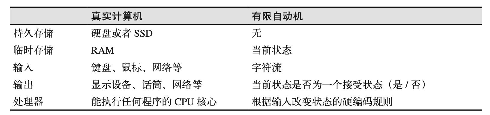
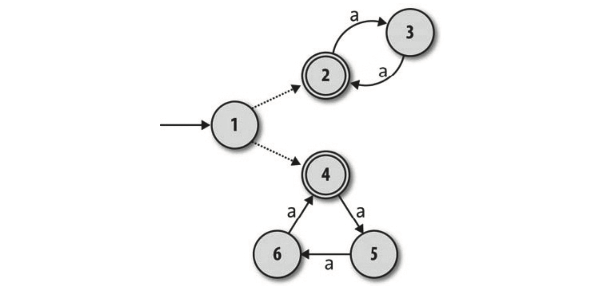
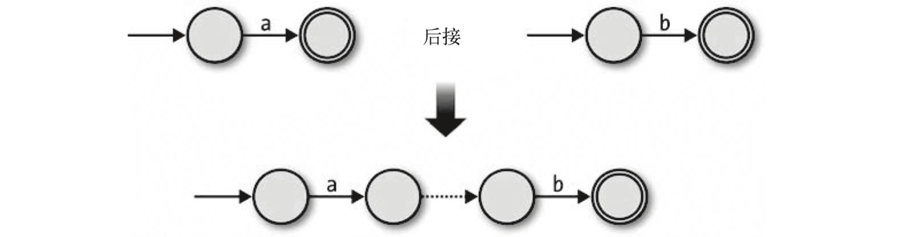
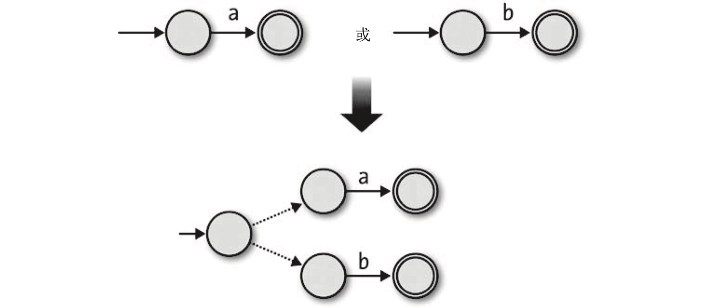
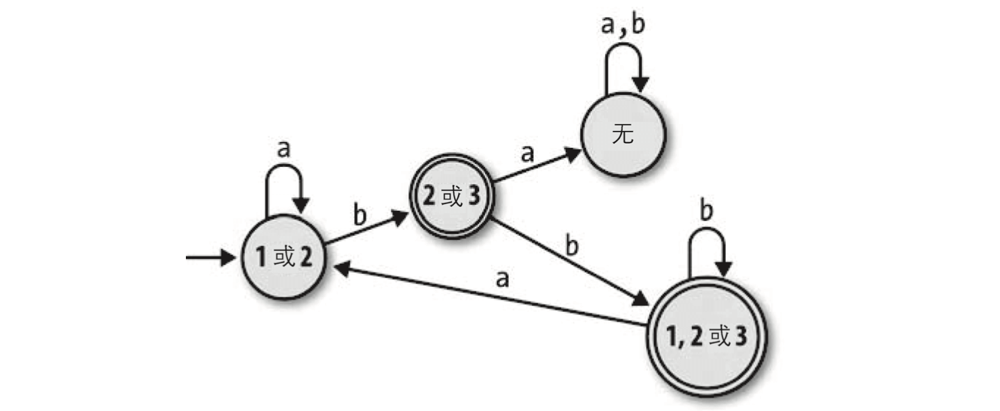
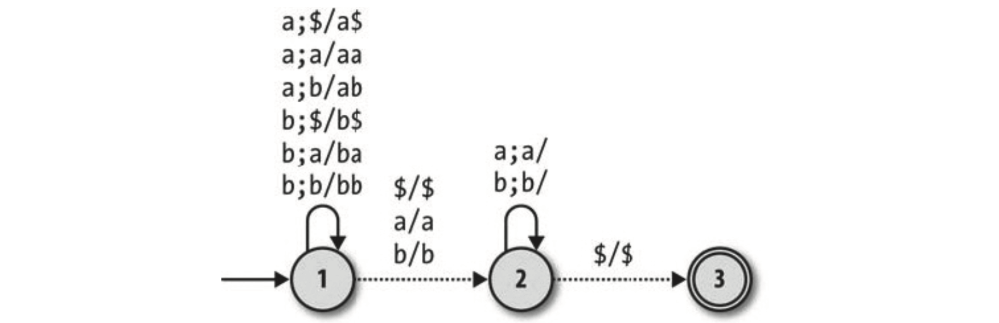

《计算的本质：深入剖析程序和计算机》读书笔记（第 3-4 章）
书接上回，本文为第 3-4 章的笔记。
第 3 章 - 最简单的计算机
- （Page：59）“有限状态机（aka. “有限自动机”）”是一台计算机的极简模型；
- 只有一个外部的字符输入流，可以一次读取一个字符（符号）；
- 没有持久化的存储，且几乎没有 RAM；
- 硬编码的“规则集合”，决定在相应输入下如何从一个状态切换到另一个状态；
- DFA 的“确定性”：
- 没有冲突：一个状态对于同样的输入，不能有多个规则；
- 没有遗漏：每个状态都必须针对每个可能的输入字符有至少一个规则。
- 一个简易的 DFA（确定性有限自动机）：
- 上图中状态 “2” 为接受状态；
- 机器接受任何奇数个数的 “a” 组成的字符串（可进行的计算）。

- 使用“规则手册（转移函数）”模拟 DFA 行为：
class FARule < Struct.new(:state, :char, :next_state)
def applies_to?(state, char) # 指示规则是否可用；
self.state == state && self.char == char
end
def follow # 返回某个规则应用后的下一个状态；
next_state
end
def inspect
"#<FARule #{state.inspect} -- #{char} --> #{next_state.inspect}>"
end
end
class DFARuleBook < Struct.new(:rules)
def next_state(state, char)
rule_for(state, char).follow
end
def rule_for(state, char)
rules.detect { |rule| rule.applies_to?(state, char) } # 找不到规则，则返回 nil（确定性）；
end
end
class DFA < Struct.new(:current_state, :accept_states, :rulebook)
def accepting?
accept_states.include?(current_state)
end
def read_char(char)
self.current_state = rulebook.next_state(current_state, char)
end
def read_string(str)
str.chars.each do |char|
read_char(char)
end
end
end
rulebook = DFARuleBook.new([
FARule.new(1, 'a', 2),
FARule.new(1, 'b', 1),
FARule.new(2, 'a', 2),
FARule.new(2, 'b', 3),
FARule.new(3, 'a', 3),
FARule.new(3, 'b', 3)
])
dfa = DFA.new(1, [3], rulebook)
dfa.read_string('baaab')
puts dfa.accepting?- （Page：65）非确定性有限自动机（NFA）：
- 对于每一个输入序列有多条执行路径（规则）；
- 在向下一个状态转移时会有多种可能性，或有时根本无法转移，即进入到一个错误状态（卡死状态）；
- 能被“有限自动机”识别的语言称为“正则语言”。
- 一个简易的 NFA：
- 模拟 NFA 行为：
- 通过跟踪一台 NFA 当前所有可能的状态来模拟一台简单的 NFA；
- 可以通过 DFS 或“线程分叉”来找到一条输入序列可以被 NFA 接受的详细“路径”。但若不需知道路径的详情，可以仅通过查询每一个字符输入时的“状态集合变化”来判断输入序列可否被接受。
require 'set'
class NFARuleBook < Struct.new(:rules)
def next_states(states, char)
states.flat_map { |state| follow_rules_for(state, char) }.to_set
end
def follow_rules_for(state, char)
rules_for(state, char).map(&:follow) # 返回 “next_state”；
end
def rules_for(state, char)
rules.select { |rule| rule.applies_to?(state, char) }
end
end
class NFA < Struct.new(:current_states, :accept_states, :rulebook)
def accepting?
(current_states & accept_states).any? # 判断当前可能的状态集合与“接受状态”是否有交集？
end
def read_char(char)
self.current_states = rulebook.next_states(current_states, char)
end
def read_string(str)
str.chars.each do |char|
read_char(char)
end
end
end- 自由移动（Free Move，ε-moves）：
- NFA-ε；
- 让机器无需读取任何输入就能自发遵照执行；
- 可用于组合单体 NFA（应用于“正则表达式”的解析中）。

- 这里可以使用
nil来代替触发“自由移动”的“输入”（实际上无需任何输入）；
class NFARuleBook
def follow_free_moves(states)
more_states = next_states(states, nil);
if more_states.subset?(states)
states
else
follow_free_moves(states + more_states) # 递归查找所有可能；
end
end
end
class NFA
def current_states # 覆盖原有属性（动态属性）；
rulebook.follow_free_moves(super)
end
end- *一个 NFA 对象的封装 *：
class NFADesign < Struct.new(:start_state, :accept_states, :rulebook)
def accepts?(str)
to_nfa.tap { |nfa| nfa.read_string(str) }.accepting? # "tap" 方法对代码块求值，并返回调用它的对象；
end
def to_nfa(current_states = Set[start_state])
NFA.new(current_states, accept_states, rulebook)
end
end- （Page：74）正则表达式：NFA 的一个重要应用，每一个与正则表达式匹配的字符串都能被其对应的 NFA 接受。可以将 NFA 理解为正则的一个“指称语义”；
- 大多数现实中的正则库会使用“回溯算法”而非转换为 NFA 来更直接地处理正则表达式。
- 空（Empty）：
- 单字符（Literal）：
- 连接（Concatenate）：

- 直接将两个 NFA 按顺序连接到一起，用“自由移动”把它们联结在一起，并保留第二个 NFA 的接受状态；
- 该组合机器的结构：
- 第一个 NFA 的起始状态；
- 第二个 NFA 的接受状态；
- 两台 NFA 的所有规则；
- 一些额外的“自由移动”，可以将两个 NFA 连接起来。
- 选择（Choose）：

- 增加一个新的起始状态，并通过“自由移动”将两台 NFA 连接起来；
- 该组合机器的结构：
- 一个新的起始状态；
- 两台 NFA 的所有接受状态；
- 两台 NFA 的所有规则；
- 两个额外的“自由移动”，可以将两个 NFA 连接起来。
- 重复（Repeat）：
- 从它的接受状态到开始状态增加一个自由移动（可以匹配多个）；
- 增加一个可自由移动到旧的开始状态的新状态，并使其作为接受状态（可以匹配空字符串）；
- 该组合机器的结构：
- 一个新的起始状态，它也是一个接受状态；
- 旧的 NFA 中的所有接受状态；
- 旧的 NFA 中所有的规则；
- 一些额外的“自由移动”，把旧的 NFA 的每一个接受状态与旧的起始状态连接起来；
- 另一些“自由移动”，把新的起始状态与旧的起始状态连接起来。
- 定义正则表达式 AST 上的相关类：
module Pattern
def bracket(outer_precedence)
if precedence < outer_precedence
'(' + to_s + ')'
else
to_s
end
end
def inspect
"/#{self}/"
end
end
class Empty # 基本正则元素；
include Pattern
def to_nfa_design # 转换到对应的 NFA；
start_state = Object.new
accept_states = [start_state]
rulebook = NFARuleBook.new([])
NFADesign.new(start_state, accept_states, rulebook)
end
def to_s
''
end
def precedence
3
end
end
class Literal < Struct.new(:char) # 基本正则元素；
include Pattern
def to_nfa_design # 转换到对应的 NFA；
start_state = Object.new
accept_states = Object.new
rule = FARule.new(start_state, char, accept_states)
rulebook = NFARuleBook.new([rule])
NFADesign.new(start_state, [accept_states], rulebook)
end
def to_s
char
end
def precedence
3
end
end
class Concatenate < Struct.new(:first, :second)
include Pattern
def to_nfa_design
first_nfa_design = first.to_nfa_design
second_nfa_design = second.to_nfa_design
# 第一个 NFA 的起始状态；
start_state = first_nfa_design.start_state
# 第二个 NFA 的接受状态；
accept_states = second_nfa_design.accept_states
# 两台 NFA 的所有规则；
rules = first_nfa_design.rulebook.rules + second_nfa_design.rulebook.rules
# 额外的“自由移动”；
extra_rules = first_nfa_design.accept_states.map {
|state| FARule.new(state, nil, second_nfa_design.start_state)
}
rulebook = NFARuleBook.new(rules + extra_rules)
NFADesign.new(start_state, accept_states, rulebook)
end
def to_s
[first, second].map { |pattern| pattern.bracket(precedence) }.join
end
def precedence
1
end
end
class Choose < Struct.new(:first, :second)
include Pattern
def to_nfa_design
first_nfa_design = first.to_nfa_design
second_nfa_design = second.to_nfa_design
# 一个新的起始状态；
start_state = Object.new
# 两台 NFA 的所有接受状态；
accept_states = first_nfa_design.accept_states + second_nfa_design.accept_states
# 两台 NFA 的所有规则；
rules = first_nfa_design.rulebook.rules + second_nfa_design.rulebook.rules
# 两个额外的“自由移动”，可以将两个 NFA 连接起来；
extra_rules = [first_nfa_design, second_nfa_design].map {
|nfa_design| FARule.new(start_state, nil, nfa_design.start_state)
}
rulebook = NFARuleBook.new(rules + extra_rules)
NFADesign.new(start_state, accept_states, rulebook)
end
def to_s
[first, second].map { |pattern| pattern.bracket(precedence) }.join('|')
end
def precedence
0
end
end
class Repeat < Struct.new(:pattern)
include Pattern
def to_nfa_design
pattern_nfa_design = pattern.to_nfa_design
# 一个新的起始状态，它也是一个接受状态；
start_state = Object.new
# 旧的 NFA 中的所有接受状态；
accept_states = pattern_nfa_design.accept_states + [start_state]
# 旧的 NFA 中所有的规则；
rules = pattern_nfa_design.rulebook.rules
# 一些额外的“自由移动”，把旧的 NFA 的每一个接受状态与旧的起始状态连接起来；
extra_rules = pattern_nfa_design.accept_states.map {
|accept_state| FARule.new(accept_state, nil, pattern_nfa_design.start_state)
} +
# 另一些“自由移动”，把新的起始状态与旧的起始状态连接起来；
[FARule.new(start_state, nil, pattern_nfa_design.start_state)]
rulebook = NFARuleBook.new(rules + extra_rules)
NFADesign.new(start_state, accept_states, rulebook)
end
def to_s
pattern.bracket(precedence) + '*'
end
def precedence
2
end
end
pattern = Repeat.new(
Concatenate.new(
Literal.new('a'),
Choose.new(Empty.new, Literal.new('b'))))
puts pattern.to_nfa_design.accepts?('abaab')- （Page：89）NFA 到 DFA 的转换：
- 把任何 NFA 转成接受完全相同字符串的 DFA 是可能的；
- DFA 的行为与其模拟是一一对应的，即“完全匹配”。而 NFA 的模拟只能描述其行为中的“一条路径”，即“可能状态的集合”之间的移动；
- 最坏情况下，一台有 n 个状态的 NFA 可能需要 2^n 个状态的 DFA；
- DFA 比 NFA 更容易模拟，且用硬件或机器代码实现起来足够简单。因此通常可以先将一个概念（比如“正则”）转换为 NFA，再转换为 DFA，最后被快速实现；
- DFA 最小化：即所持有状态是最少的 DFA。从 NFA 到 DFA 的转换有时会产生包含冗余状态的“非最小化 DFA”，此时可以通过 “Brzozowski” 算法来进行优化。可以通过最小化的 DFA 来判断两个 NFA 的等价性。
- 一个例子：
- NFA：
- 对应的 DFA：
- follow_free_moves 会在每次查找下一个状态集合后，收集所有可以再次通过 “ε-moves” 得到的新状态。并将此作为下一次查询的输入状态。

rulebook = NFARulebook.new([
FARule.new(1, 'a', 1),
FARule.new(1, 'a', 2),
FARule.new(1, nil, 2),
FARule.new(2, 'b', 3),
FARule.new(3, 'b', 1),
FARule.new(3, nil, 2)
])
class NFASimulation < Struct.new(:nfa_design)
def next_state(state, char)
nfa_design.to_nfa(state).tap { |nfa|
nfa.read_char(char)
}.current_states
end
end
nfa_design = NFADesign.new(1, [3], rulebook)
simulation = NFASimulation.new(nfa_design)
puts simulation.next_state(Set[1, 2], 'a') #<Set: {1, 2}>.
class NFARuleBook
def alphabet
rules.map(&:char).compact.uniq
end
end
class NFASimulation
def rules_for(state)
nfa_design.rulebook.alphabet.map { |char|
FARule.new(state, char, next_state(state, char))
}
end
def discover_states_and_rules(states)
rules = states.flat_map { |state| rules_for(state) }
more_states = rules.map(&:follow).to_set
if more_states.subset?(states) # 检查 more_states 是否是 states 的子集（意味着已经找到了全部状态）；
[states, rules]
else
discover_states_and_rules(states + more_states) # 递归找到所有路径；
end
end
def to_dfa
start_state = nfa_design.to_nfa.current_states
states, rules = discover_states_and_rules(Set[start_state])
accept_states = states.select { |state| nfa_design.to_nfa(state).accepting? }
DFA.new(start_state, accept_states, DFARuleBook.new(rules))
end
end
dfa = simulation.to_dfa
#<struct FARule state=#<Set: {1, 2}>, character="a", next_state=#<Set: {1, 2}>>
#<struct FARule state=#<Set: {1, 2}>, character="b", next_state=#<Set: {3, 2}>>
#<struct FARule state=#<Set: {3, 2}>, character="a", next_state=#<Set: {}>>
#<struct FARule state=#<Set: {3, 2}>, character="b", next_state=#<Set: {1, 3, 2}>>
#<struct FARule state=#<Set: {}>, character="a", next_state=#<Set: {}>>
#<struct FARule state=#<Set: {}>, character="b", next_state=#<Set: {}>>
#<struct FARule state=#<Set: {1, 3, 2}>, character="a", next_state=#<Set: {1, 2}>>
#<struct FARule state=#<Set: {1, 3, 2}>, character="b", next_state=#<Set: {1, 3, 2}>>
puts dfa.rulebook.rules第 4 章 - 增加计算能力
- （Page：100）确定性下推自动机（DPDA）：
- 一台有限自动机只能有固定的状态集合，因此其存储是有限的，无法跟踪任意数量的信息。在信息数目不可预知，且需要在计算过程中存储并在之后重用的场景下，有限自动机无能为力。
- NFA 与任意“正则”等价，因此理论上使用正则无法区分出“有效 HTML” 与“无效 HTML”。但现实情况下，比如 Ruby 的正则引擎，由于采用了“调用栈跟踪”使得其可以应用于上述场景（单纯的 DFA 与 NFA 无法做到）；
- DPDA 只是将“栈”作为一个计数器，并且它的规则只区分“栈为空”和“栈不为空”；
- 确定性：
- 对于同样的状态和栈顶字符不能有多于一个的规则可以应用（单独的 “ε-moves” 也可应用，只要不与其他规则产生冲突即可）；
- 没有规则可用时，使机器进入“停滞状态”。
- 下推自动机（PushDown Automaton，PDA）：自带“栈”的有限状态机，给了机器一种“外部存储”的能力；
- 永远不要让栈真的变空（当弹出 $ 时可以选择再同时推入）。
- 一个例子：
- 模拟 DPDA：
# 栈；
class Stack < Struct.new(:contents)
def push(char)
Stack.new([char] + contents)
end
def pop
Stack.new(contents.drop(1))
end
def top
contents.first
end
def inspect
"#<Stack (#{top})#{contents.drop(1).join}>"
end
end
# 对于 PDA 的每一步：当前状态？栈当前内容？
class PDAConfiguration < Struct.new(:state, :stack)
end
class PDARule < Struct.new(:state, :char, :next_state, :pop_char, :push_char)
def applies_to?(config, char)
# 检查机器状态、栈顶字符以及下一个输入的字符；
self.state == config.state &&
self.pop_char == config.stack.top &&
self.char == char
end
def follow(config)
PDAConfiguration.new(next_state, next_stack(config))
end
def next_stack(config)
popped_stack = config.stack.pop # 弹出栈顶元素；
push_char.reverse.inject(popped_stack) {
|stack, char| stack.push(char)
}
end
end
class DPDARuleBook < Struct.new(:rules)
def next_config(config, char)
rule_for(config, char).follow(config) # 返回下一个“配置”；
end
def rule_for(config, char)
rules.detect { |rule| rule.applies_to?(config, char) }
end
end
# configuration = PDAConfiguration.new(1, Stack.new(['$']))
# rulebook = DPDARuleBook.new([
# # :state, :char, :next_state, :pop_char, :push_char.
# PDARule.new(1, '(', 2, '$', ['b', '$']),
# PDARule.new(2, '(', 2, 'b', ['b', 'b']),
# PDARule.new(2, ')', 2, 'b', []),
# PDARule.new(2, nil, 1, '$', ['$'])
# ])
# configuration = rulebook.next_config(configuration, '(')
# configuration = rulebook.next_config(configuration, '(')
# configuration = rulebook.next_config(configuration, ')')
# configuration = rulebook.next_config(configuration, ')')
# puts configuration
class DPDA < Struct.new(:current_config, :accept_states, :rulebook)
def accepting?
accept_states.include?(current_config.state)
end
def read_char(char)
# 在读取字符时会返回行的 PDAConfiguration（状态 + 栈）；
self.current_config = rulebook.next_config(current_config, char)
end
def read_string(str)
str.chars.each do |char|
read_char(char)
end
end
end
# 支持“自由移动”；
class DPDARuleBook
def applies_to?(config, char)
!rule_for(config, char).nil?
end
def follow_free_moves(config)
if applies_to?(config, nil) # 若有可用的“自由移动”；
follow_free_moves(next_config(config, nil)) # 递归进行“自由移动”；
else
config
end
end
end
class DPDA
def current_config
rulebook.follow_free_moves(super)
end
end
# 封装；
class DPDADesign < Struct.new(:start_state, :bottom_char, :accept_states, :rulebook)
def accepts?(str)
to_dpda.tap { |dpda| dpda.read_string(str) }.accepting?
end
def to_dpda
start_stack = Stack.new([bottom_char]) # 栈初始状态；
start_config = PDAConfiguration.new(start_state, start_stack)
DPDA.new(start_config, accept_states, rulebook)
end
end- （Page：110）非确定性下推自动机（NPDA）：
- 无法将一个 NPDA 转换成对应的 DPDA（栈的多种组合无法被合并成一个）；
- NPDA 可用来解决“判断无标记回文”的问题，而 DPDA 无法做到。
- 一个例子：

- （Page：116）PDA 解析编程语言：
- “词法分析”可以通过“正则表达式”（也就是一台 NFA）来实现；
- “语法分析”可以通过 NPDA 实现（LL 分析，从左到右的顺序，按照“左侧优先”进行推导）。